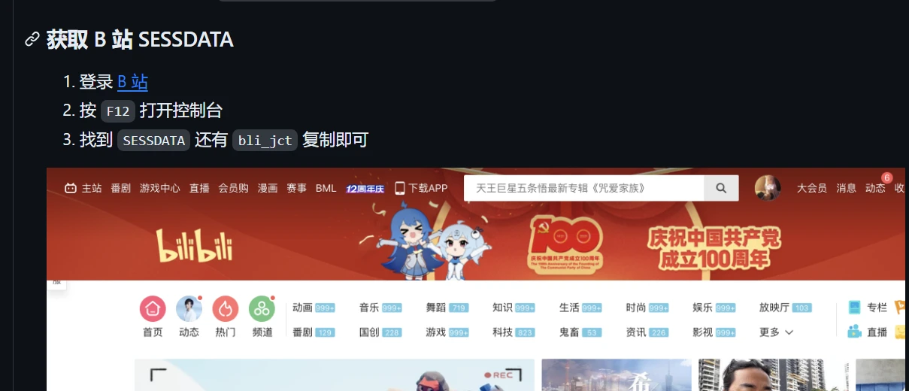
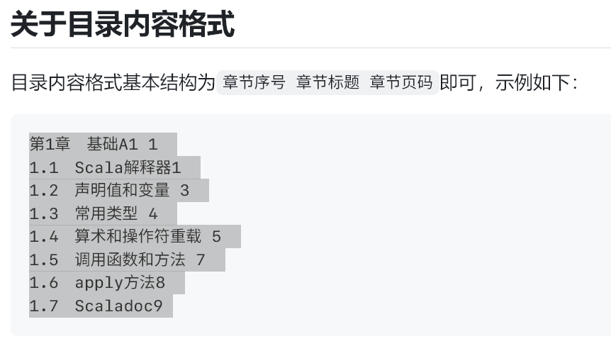
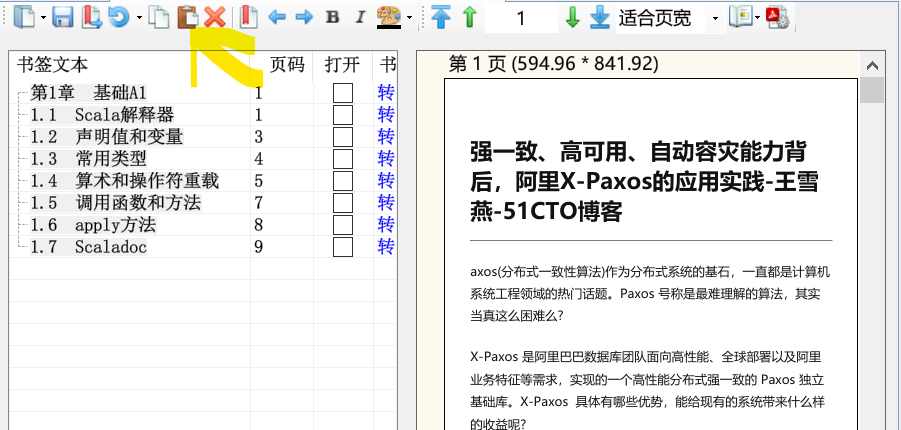

小程序
| 名称 | 功能 |
|---|---|
| 粉笔证件照 | 证件照换底色，裁剪等 |
| 车来了 | 公交车到站时间 |
APP
Amarok 设置隐藏的文件和隐藏的应用。https://deltazefiro.github.io/Amarok-doc/download.html
PC软件
1 浏览器
1.1 浏览器推荐
- QQ浏览器不支持密码导入、插件导入
- 360浏览器不支持密码导入，插件导入
- edge刚出的时候把chrome同步和扩展相关的痛点解决了，chrome般的性能与兼容性+可以同步=完美，可惜后面一个劲的加垃圾进去，变得越来越臃肿，但是又没办法替代
微软 Edge 浏览器是由微软开发的一款网页浏览器，旨在取代之前的 Internet Explorer。它最初于 2015 年发布，后来在 2019 年进行了全面重新设计，采用了基于 Chromium 开源项目的新内核，以提供更好的性能、兼容性和安全性。以下是关于微软 Edge 浏览器的一些详细介绍以及其优缺点：
优点：
- 微软应用商店的支持
- 不翻墙同步
- 多端同步工作,例如将
网址推送到另一台设备上
1.2 edge 设置
名称：微软 Edge 配置百科
- 是一款方便配置 Edge 浏览器功能的软件，选择相应功能启用或禁用，配置完后工具选项重启 edge 即可生效
- 微软的 Edge 浏览器功能越来越多，但用不上的烦人功能也越来越多，比如烦人的侧边栏还有右上角那个必应按扭等等。
- 所以出现了这款工具，几乎涵盖了最新版 Edge 所有可配置的项， 设置频率较高的放在快捷菜单里直接用，一些高级设置项大多需要有经验者才能设置，而且用的频率也不高暂时没有，另外加了个重启功能，方便设置完后重启生效。
链接:https://caiyun.139.com/m/i?105Cpe0kUndCa 提取码:mA4h 复制内容打开移动云盘PC客户端，操作更方便哦
设置内容
关闭以下三项
- 启动增强
- 在MicrosoftEdge关闭后继续运行后台扩展和应用
- 使用硬件加速
1.3 浏览器下载——NDM
-
免费，多系统支持：macOS， Windows
-
暂停/恢复功能，高速下载文件
-
具有浏览器扩展，可以向其发送下载链接并帮助您从任何网站下载视频/音频
-
嗅探资源
我的需求
- 稳定，不要提示破解（ IDM 总是提示，pass ）
- 免费
- 嗅探资源
缺点
- 嗅探不了
wangfei.tv的视频 - 哔哩哔哩视频下载没有声音,
使用教程
- 安装
- 将
exe放入安装地址，安装插件
链接:https://caiyun.139.com/m/i?105CpeXZ9Wch0 提取码:Yvcb 复制内容打开移动云盘PC客户端，操作更方便哦
1.4 浏览器插件
- 安装时搜索并下载到
crx格式的文件，并放在一个你之后不会不小心删掉的文件夹，因为安装之后扩展被删掉会错误失效 - 可以用火绒的「弹窗拦截」功能来解决每次启动Chrome时，浏览器右上角会弹出「请停用以开发者模式运行的扩展程序」
- Chrome 占用高的原因在于它会给每个扩展和标签页单独开一个进程
火狐安装组件提示 “此附加组件无法安装，因为他有可能已经损坏” 解决方法
解决方案：
- 火狐地址栏输入 “about:config”, 回车会提示可能失去质保，点击 “ 我保证会小心”；
- 搜索 “xpinstall.signatures.required”，双击 “true” 自动改为”false“;
- 将组件拖入浏览器安装，并检查是否安装成功。
| 插件名称 | 说明 |
|---|---|
| onetab | 将不看的页面保存到一个标签页中 |
| itab | |
| Holmes | 使用Alt+Shif+H即可搜索书签；当然你也可以在搜索框中输入*+Tab来搜索； |
| Markdown Here | 写博文时可以使用markdown, 输入markdown -> 点击图标 |
| markdown here基本渲染css | 微信公众号毫秒级排版，让你的排版充满审美愉悦感。复制代码到“markdown here基本渲染css”即可 |
| markdownload | 将文章保存为md格式 |
| mpmath | |
| Markdown Nice | 微信公众号排版 |
| tampermonkey | 俗称油猴插件, 使用它你将发现新的世界 |
| Adblock Plus | 广告拦截 |
| Cookie-Editor - Microsoft Edge Addons | 设置cookie |
| Dark Reader | 将网页变成黑暗模式 |
| globle speed | 设置视频播放速度 |
| Refined Leetcode - Microsoft Edge Addons | 增强 LeetCode-cn 刷题体验 |
| A+ 文本大小更改器 - Microsoft Edge Addons | alt + 上下箭头 来更改字体大小 |
| 学习 强国 插件 | 自动学习强国 |
| 功能 | 名称 | 介绍 |
|---|---|---|
| 脚本管理 | ViolentMonkey | 让你的Chrome可以使用油猴脚本（相比 Tampermonkey、GreaseMonkey 更为简洁方便） |
| 下载管理 | Chrono | 最好用的Chrome第三方下载管理器，支持资源嗅探 |
| 恢复关闭标签 | SimpleUndoClose | 给Chrome添加一个「恢复刚刚关闭的网页」的按钮 |
| 广告屏蔽 | uBlock Origin | 优秀的网页广告屏蔽扩展，支持手动选择网页元素进行屏蔽 |
| 视频下载 | CocoCut | 除了支持视频嗅探，对于一些能播放但无法下载的视频，提供录屏下载模式，支持把网页挂在后台录屏！ |
| 图片批量下载 | Fatkun | 可以嗅探、分析网页图片、图片筛选、批量下载等功能 |
| 手势操作 | crxMouse | 让Chrome可使用自定义的鼠标手势（比如左滑为后退，下滑为刷新）提高工作效率 |
| 搜索切换 | 地址栏搜索切换器 | 一键切换Chrome的搜索引擎（支持自定义） |
| B站功能增强 | bilibili哔哩哔哩下载助手 | 帮你下载B站版权受限（能看不能缓存）的 番剧 |
| 查词工具 | 沙拉查词 | 大概是目前 Chrome 划词翻译扩展中体验最好的 |
| 翻译工具 | 彩云小译 | 一键实现网页「中英文对照翻译」的工具 |
| 以图搜图 | 二箱 | 聚合以图搜图 |
| 网页截图 | FireShot | 一键滚动截屏整个网页 |
| 视频加速 | Video Speed Controller | 让html5视频支持倍速播放，最快可达16倍 |
| 二维码 | 轻松二维码 | 点击扩展即可生成当前网址的二维码，同时可以主动输入网址生成二维码 |
| 剪贴板同步 | Bark | 一键把网页上的文本、网址、剪贴板内容推送到iPhone剪贴板（需要安装Bark手机端） |
二管家
- 一个完全免费开源且颇具好评的 Chrome 扩展管理工具了——二管家
- 二管家最核心的功能是：根据规则自动开关扩展，比如「B站下载助手」这个扩展，其实我们只需要它在B站上运行，利用二管家即可做到：平时这个扩展关闭，只有当你打开B站时，才自动帮你开启它
- 设置这样一个规则的方法也很简单，在二管家的自动管理页面参照下图添加规则即可
- 二管家中点击查看一个扩展的详细信息，里面可以轻松把这个扩展的CRX文件提取出来
1.5 油猴脚本
首先介绍一个网站油小猴 (youxiaohou.com)
他的介绍如下：
- 一个汇聚了各种黑科技的小站
| 脚本名称 | 说明 |
|---|---|
| 显示力扣周赛难度分 | 显示题目对应 周赛难度分 的浏览器插件 |
| 微信公众号 阅读 | |
| 微信公众号文章阅读模式 (greasyfork.org) | |
| 网页宽屏 (greasyfork.org) | |
| 微信 Bilibili 小程序链接转直链 (greasyfork.org) | |
| 万能验证码自动输入（升级版） (greasyfork.org) | b773cd0b68a64bc88d9722310ab30a7e |
Youtube 工具 多合一本地下載 MP4、MP3
Picviewer CE+ (greasyfork.org)
AC-baidu - 重定向优化百度搜狗谷歌必应搜索_favicon_双列
- 去掉百度、搜狗、谷歌搜索结果的重定向，回归为网站的原始网址 — 附带有去除百度的广告 包括百度顶部和底部的垃圾广告 - 百家号
- 默认移除百度百家号的内容 – 应广大群众的需求
- 提供护眼模式，颜色自定义，夜晚不伤眼
- 支持自定义页面效果，如果你会 css 样式表的话，你可以自己优化整体的页面效果
- 添加百度、搜狗、谷歌搜索结果中 Favicon 显示效果，页面效果更加美观和实用
- 添加标记数量，标记当前的 id，界面更好看
- 百度和谷歌、必应和搜狗搜索页面都可以设置为单列、双列模式以及多列模式，视野更大
- 请求是异步请求，并不会出现一个链接没有反馈回来，其余等待的情况，每个链接的请求都是独立的，互不影响，对于网络的影响几乎没有
本地 YouTube 下载器 (greasyfork.org)
安装以后，我们打开 You Tube 的视频，在视频下方就会有 “显示 / 隐藏链接” 的按钮，点开即可看到视频下载的链接。
1.6 验证码
我的解决方案是
- 万能验证码输入-自动版来解决验证码问题
-
YesCaptcha解决谷歌的点谷歌认证
-
I’m not robot captcha clicker这个扩展算是阿虚测试半天后发现最简单易用的谷歌 ReCAPTCHA 验证码自动验证扩展了，完全免费且安装后无需任何设置，在遇到谷歌的 ReCAPTCHA 验证时会自动帮你进行人机验证（甚至不会弹出验证内容）
-
NopeCHA 是 Chrome 扩展商店中一款超10W人安装的免费扩展，官网：https://nopecha.com/
-
Buster是 Chrome 扩展商店另一款免费的自动过人机验证扩展，可以和上述 2 款扩展搭配使用，不会相互冲突，其他扩展不起作用的话可以换 Buster 手动来解决！ -
AutoVerify是 Chrome 扩展里面一款良心的完全免费数字、字母、中文验证码自动识别扩展，需要手动操作 -
YesCaptcha是 Chrome 扩展商店里面一款付费的人机验证码助手扩展，推荐它的一大原因是在这类服务中鲜有的支持国内付费方式＋价格实惠，现在注册即可获得1500积分
（需联系客服获取），然后10元就可以买10200积分，解1次验证码消耗10点左右，平均下来差不多于1分钱1次——视个人使用情况10块钱基本够用几个月了，多数网站可以自动识别填写，如果不支持，可以自行右键验证码图片「标记验证码」，另外如果验证码没有自动填写，可以右键验证码输入框，手动选择「输入验证码」
写这篇推荐阿虚尝试过大量扩展和脚本，如果你还想寻找另外的扩展，帮大家避个坑，以下这些扩展你就不用去测试了，都不能用：
- True Captcha：识别有效，但不提供验证码输入服务
- CaptchaLess：仅限识别中科大网站验证码
- Moodle Captcha：算数类验证码
- AutoCAPTCHA：配置复杂，无法适配多个网站
- Captcha Cracker：失效
- Rumola：收费
- reCAPTCHA Autoclicker：失效
- ReCaptcha Solver：需要购买2captcha、DeathByCaptcha、ImageTyperz、Anti-Catcha、BestCaptchaSsolver 和 EndCaptcha之一的 API 密钥才可使用
- RegChula Captcha Solver：失效
- hCaptcha Solver：失效
- Captcha Solver：需要购买 2captcha 的 API 密钥才可使用
- Easy AliExpress Captcha Solver：仅适用于 AliExpress.com
- Captcha Recognizer：仅适用于台湾的一些网站
- Auto CAPTCHA Solver：付费且价格不菲
- AZcaptcha automatic captcha solver：需购买 AZcaptcha 的API Key 之后才可使用
- Vtop Captcha Solver：仅适用于 VIT 一系列网站
- reCAPTCHA Solver：需购买 API Key 之后才可使用
- SYSU CAS Captcha Autofill：仅适用于中山大学相关网站
- MB_Solver：需注册购买 API Key 之后才可使用
2 开机必备——-全部在使用
链接:https://caiyun.139.com/m/i?105Cf0HYVVQnk 提取码:XEOG 复制内容打开移动云盘PC客户端，操作更方便哦
| 软件名称 | 说明 |
|---|---|
| softdownloader | 软件下载三点下载_官网 |
| lauchy | 快捷启动器 |
| bandzip | 解压软件 |
| ditto | 剪切板管理,(alt + d 呼出) |
| 360文件夹 | 标签页合并 |
| potplayer | 影音播放器 |
| 火绒 | 防护软件 |
| 手心输入法 | 输入法软件 |
| —–小工具—– | |
| Captura | 开源免费的录屏神器 |
| win 实用工具 | |
| —学习软件— | |
| samart pdf | pdf阅读软件 |
| 天若ocr识别 | ocr文字识别 |
| Mathpix | 数学公式识别, 校园邮箱每月有免费的次数 |
| typora | markdown编辑器 |
| 坚果云 | 实时同步 |
| 知云文献翻译助手 | |
| 欧陆词典 | 查词等 |
| pdf工具集 | 进行pdf分割合并等 |
| PDFCopyPasteNew | pdf 复制工具 |
| clash for windows | 翻墙 VPN |
| —下载工具—- | |
| PanDownload | 百度云盘下载, 多账号登录, |
| idm下载器 | |
| 网盘搜索助手 | |
| 磁力搜索21.9.23 | |
| jjdown | 哔哩哔哩视频下载 |
tim wechat
老板键Bosskey : 程序快速隐藏工具只需要轻轻一按预先设置好的热键，就能快速将 QQ 聊天对话框，游戏界面，淘宝购物页面瞬间隐藏。
Pandownload
- 主程序是
无言仰慕不起,其他文件是来自伪Pandownload
链接:https://caiyun.139.com/m/i?105Cq3h5souEi 提取码:43fN 复制内容打开移动云盘PC客户端，操作更方便哦
火绒应用商店—–win 软件商店
- 火绒应用商店是一个独立的软件，是没有内嵌在火绒安全管家中的；此外根据火绒官方说法， 火绒应用商店由联想应用商店提供技术支持
- 对于不太了解电脑的新手小白以及不想折腾软件下载升级的人来说，火绒应用商店可以很好的解决电脑上的应用下载安装升级卸载问题，避免被各种第三方网站捆绑下载导致电脑上出现各种莫名其妙的应用和弹窗。
- 建议命令明
appstore
链接:https://caiyun.139.com/m/i?105Cf0zKwhIst 提取码:fYAu 复制内容打开移动云盘PC客户端，操作更方便哦
天若OCR专业版
-
识别文字：调用各大服务器百度、腾讯、阿里等一系列服务商接口实现云端识别，
-
识别翻译：识别后翻译平平无奇的功能。暂时提供百度、搜狗、彩云小译、还有一个自定义接口功能。
-
截图功能：丰富的截图标注功能、和微信截图有些类似，可以二次编辑，只因为我喜欢这种编辑模式。 备注：矩形、圆形、铅笔、箭头、高亮、马赛克、模糊、序号。满足你灵魂画师的需求。
-
贴图功能：参考自伟大的 snipaste。贴图、取色、文本便签、可以编辑。
-
录制 GIF 功能：好吧，前面的 gif 都是我的软件录制的。得益于 screentogif 的开源。
3 云服务
1 图床
图床（Image Hosting Service）是一种用于存储和分享图片的在线服务。它允许用户上传图片文件，并生成一个可访问的 URL 地址，用户可以通过该地址在网页上或其他平台上分享图片。图床通常提供免费和付费两种服务，用户可以根据需要选择合适的方案使用。
图床的主要功能包括：
- 图片存储：用户可以将图片文件上传到图床服务器上进行存储，这些图片文件可以是网页中的配图、产品图片、个人照片等。
- 图片分享：图床为用户生成的图片 URL 地址可以方便地在网页、论坛、社交媒体等平台上分享图片内容，用户只需复制图片链接即可。
- 图片管理：图床通常提供图片管理功能，允许用户对上传的图片进行管理，包括查看、编辑、删除等操作。
- 图片处理：一些高级图床服务还提供图片处理功能，如裁剪、旋转、压缩等，使用户可以在图床上直接对图片进行编辑处理。
使用图床的好处包括：
- 节省空间：通过将图片上传到图床服务器，可以减轻自己网站或应用的服务器负担，节省存储空间。
- 加快加载速度：使用图床存储图片可以加速网站或应用的加载速度，因为图床通常会使用 CDN（内容分发网络）技术，将图片文件分发到全球各地的服务器节点，使用户可以从距离更近的服务器获取图片，从而加快加载速度。
- 方便分享：图床生成的图片 URL 地址可以方便地在各种平台上分享图片内容，无需担心图片被删除或地址失效的问题。
总的来说，图床是一个方便的在线服务，可以帮助用户轻松存储、管理和分享图片。
2 picgo
PicGo 是一个开源的图片上传工具，可以帮助用户快速上传图片到图床并生成图片链接。它提供了简洁友好的图形界面，支持多种图床服务，并且具有丰富的配置选项和插件扩展功能。
适用于个人用户、开发者、博主等多种场景，可以帮助用户快速、便捷地上传和管理图片，并生成图片链接用于分享或嵌入网页。
PicGo 的主要特点和功能有：
- 支持多种图床服务：PicGo 支持丰富的图床服务，包括但不限于 GitHub、七牛云、阿里云、腾讯云、Imgur 等。用户可以根据自己的需求选择合适的图床服务进行配置和使用。
- 多种上传方式：PicGo 提供了多种上传方式，包括拖拽上传、剪贴板上传、截图上传等。用户可以根据自己的习惯和需求选择合适的上传方式。
- 支持快捷键操作：PicGo 支持自定义快捷键，用户可以通过快捷键实现快速上传图片、截图等操作，提高工作效率。
- 自定义命名规则：PicGo 支持用户自定义图片文件名的命名规则，包括时间格式、文件名格式等，使用户可以根据自己的需求对上传的图片进行命名。
- 图片处理功能：PicGo 提供了一些简单的图片处理功能，如图片压缩、图片裁剪等，用户可以在上传图片之前对图片进行简单的处理。
- 丰富的插件扩展：PicGo 支持插件扩展，用户可以根据自己的需求安装各种插件，扩展 PicGo 的功能和特性，例如支持更多图床服务、添加更多上传方式等。
- 跨平台支持：PicGo 支持 Windows、macOS 和 Linux 等多个平台，用户可以在不同的操作系统上使用相同的工具和配置。
- 开源免费：PicGo 是开源项目，用户可以自由获取、使用和修改源代码，完全免费。
github 建立图片存储仓库
- 建立 public 仓库
-
设置->开发者设置->个人访问令牌->生成新令牌->设置有效期 - 申请的Token只会显示一次，当你第二次在打开该页面时就无法看到该Token了。如果忘记了Token，唯一的办法就是重新生成一个
注意如果上传的文件和仓库里的文件重名，会上传失败
//注意: "repo": "Github用户名/仓库名称",
"token": "之前你申请的Token",
{
"picBed": {
"current": "github",
"github": {
"repo": "xxx/xxx",
"branch": "main",
"token": "xxxxxxxxx",
"path": "images/",
"customUrl": ""
}
},
"picgoPlugins": {}
}
3 B站图床picgo 插件
插件在线安装
- 打开 PicGo 详细窗口，选择 插件设置，搜索 bili 安装，然后重启应用即可。
使用方法
- 找
cookie中的SESSDATA还有bli_jct复制即可

实现原理
- 将图片存在一个 B 站的公共静态资源空间。
- 举例：所有人上传的图片都会放在这个空间里面，但是你不发布动态的话，那么这个资源与你就没有绑定关系，那么你自然是找不到的。你发布了的话，你的这条动态就会跟这个图片资源绑定关系，那么查看的时候，就知道这个动态绑定了哪些图片链接，就可以看到对应的图片了。
4 其他哔哩哔哩图床软件推荐
3 文本处理
adobe reader :pdf高级阅读 fish :百度文库下载 notpad++ :文本 textpro : 全角半角符号转换 wps Pro 天若段落排版
pdf目录
查找想要的目录
- 各大书评、卖书等网站，均能找到相应书的目录，这里推荐，京东、豆瓣、淘宝
- PDF 书籍中页面非图片（即文字可以选中）时，直接复制并粘贴到软件中 ★★★
- 点击选择文件按钮选择要添加目录的 pdf 文件
-
有的 pdf 为扫描版，所以目录中的页码（书籍页码）可能与 pdf 文件实际页码不同，目录中的页码与 pdf 文件实际页码之间的差值（实际页码 - 书籍页码）即为页码偏移量。
- ifnoelse/pdf-bookmark: pdf bookmark generator 目录 书签 大纲 (github.com)
- 依旧在维护的 chroming/pdfdir: PDF 导航（大纲 / 目录）添加工具 (github.com)
-
依旧维护 比较大ririv/QuickOutline: 给 PDF 添加大纲、目录。Add outline to PDF (github.com)
- wmjordan/PDFPatcher: PDF补丁丁——PDF工具箱，可以编辑书签、剪裁旋转页面、解除限制、提取或合并文档，探查文档结构，提取图片、转成图片等等 (github.com)
1.1 pdf 目录添加
软件是 pdf patcher
有目录列表的话，复制粘贴到书签栏，保存文档就行啦。
复制目录列表：

{kind=link}
打开 PDF 文档，按粘贴按钮，将列表粘贴到书签栏：

{kind=link}
ririv/QuickOutline: 给PDF添加大纲、目录。Add outline to PDF (github.com)
1.2 pdf 补丁丁
1.3 pdf 复制
https://github.com/wangfreexx/PDFCopyPasteNew/releases/tag/V1.0
1.4 pdf patcher 去除密码
文件—文档属性—-设置PDF文件的修改方式(左下角)—压缩清理
3 视频 音频 图像
MP4合并 屏幕白班 快剪辑 录屏 视频转换器 图片画质放大
音频MP3剪辑zip
音频Mp3tagv3.01mp3信息修改.zip
音频MP3录音.zip
音频appui音视频转文本视频转音频zip
链接:https://caiyun.139.com/m/i?105CfKMUC4Yf2 提取码:yJhq 复制内容打开移动云盘PC客户端，操作更方便哦
4 下载工具
thunder 11 :21.8.4 网络视频下载 局域网互传 玩客云
美化
桌面美化
腾讯桌面
360桌面
链接:https://caiyun.139.com/m/i?105Cq3hhO8tE7 提取码:XSEt 复制内容打开移动云盘PC客户端，操作更方便哦
用来存放我的项目以及一些好的项目
Best_Softwares
The Best Software to Use
限于 github 只能传输 <25 m 的文件的限制
0 auto 办公自动化
- 1 答案查找
- 2 将子文件夹内的问题件移出 并 重命名为 该子文件夹名称
3 code
3.1 source insights
-
好用的查看代码软件
4 网盘软件
2.1 百度云盘
- 伪 pandownload
- 再买一个共享会员的账号, 美滋滋扫码登陆 (hezuvip.cn)
2 clash
https://github.com/Fndroid/clash_for_windows_pkg
- 机场在这里
- 按流量付费, 十五元, 130g, 不限时间